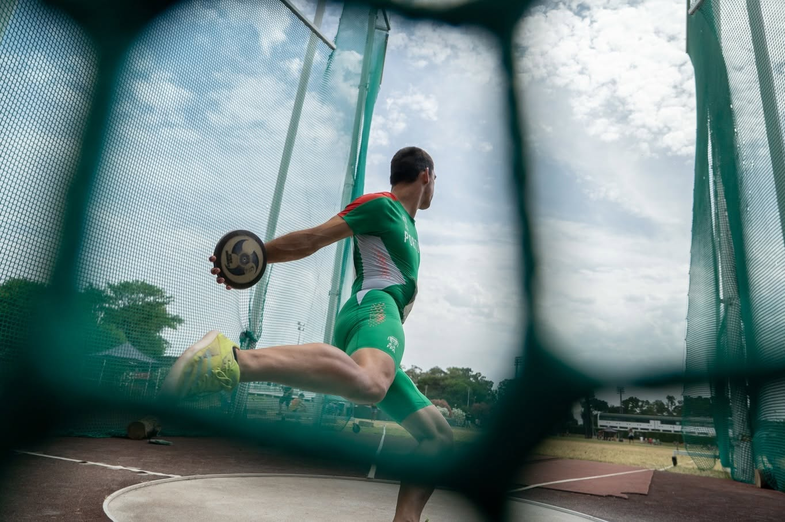
João Oliveira 4º no Torneio Ibérico de Provas Combinadas
Que orgulho para o nosso atleta, João Oliveira, ser novamente selecionado para representar a Seleção Nacional no Torneio Ibérico de Provas Combinadas, realizado nos dias 22 e 23 de junho em Lisboa.
Ler notícia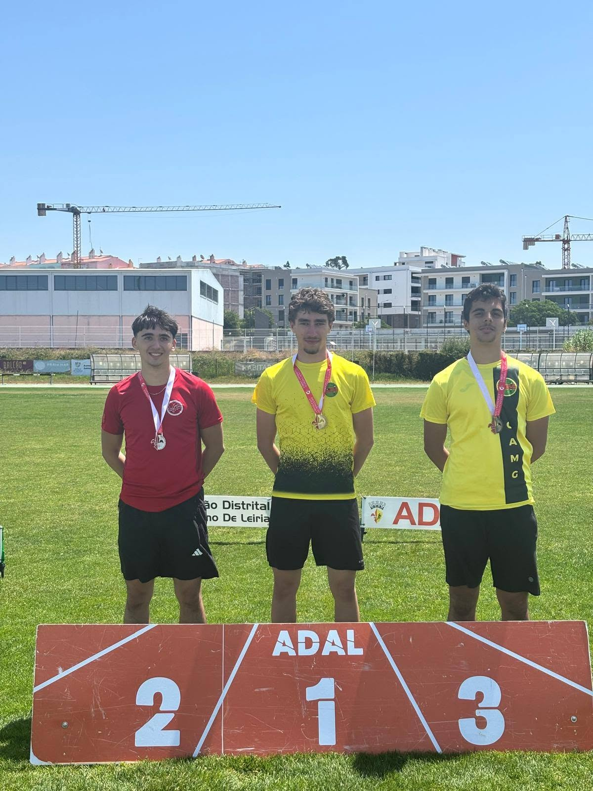
Sub-20 em Evidência no Distrital
No passado fim de semana, dias 20 e 21 de junho, decorreu nas Caldas da Rainha o Campeonato Distrital de Sub-20.
Ler notícia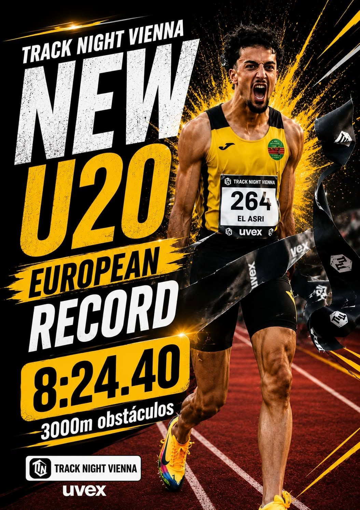
Recorde da Europa
Bark El Asri Moshine faz história em Viena e torna-se o melhor atleta jovem da Europa - orgulho eterno do CAMG!
Ler notícia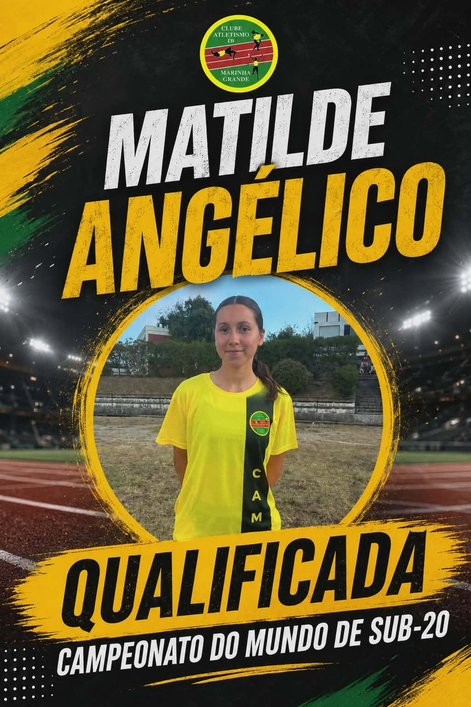
Matilde Angélico Fez História
Arranca vaga para os mundiais e leva o nome de Marinha Grande até à América.
Ler notícia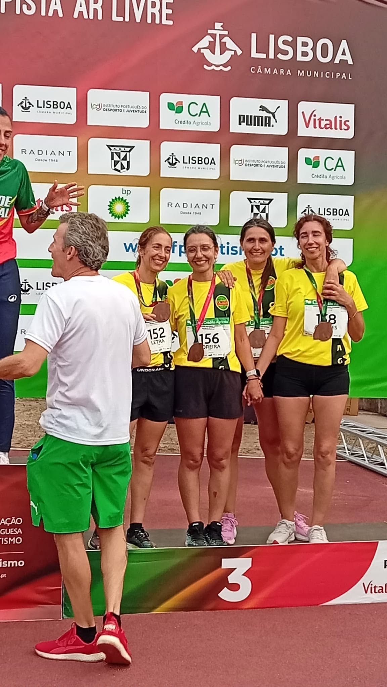
40 Anos de Amizade, 2 Meses de Treino, e 1 Pódio No Nacional de Veteranas
Há 37 anos, quatro raparigas do Atlético Clube Marinhense subiram ao pódio distrital de corta-mato e guardaram essa memória para sempre.
Ler notícia
Ana Paula André: Uma conversa que vai além do atletismo
Liderança, sacrifício e paixão — a presidente do CAMG abriu o jogo à TVMG sobre o clube que compete com o coração de uma cidade inteira.
Ler Entrevista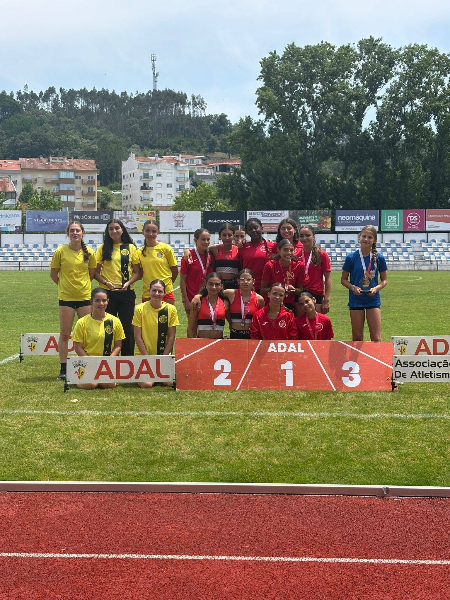
Equipas Sub-18 no Pódio Distrital
Decorreu no passado fim de semana em Pombal o Campeonato Distrital de Sub-18.
Ler notícia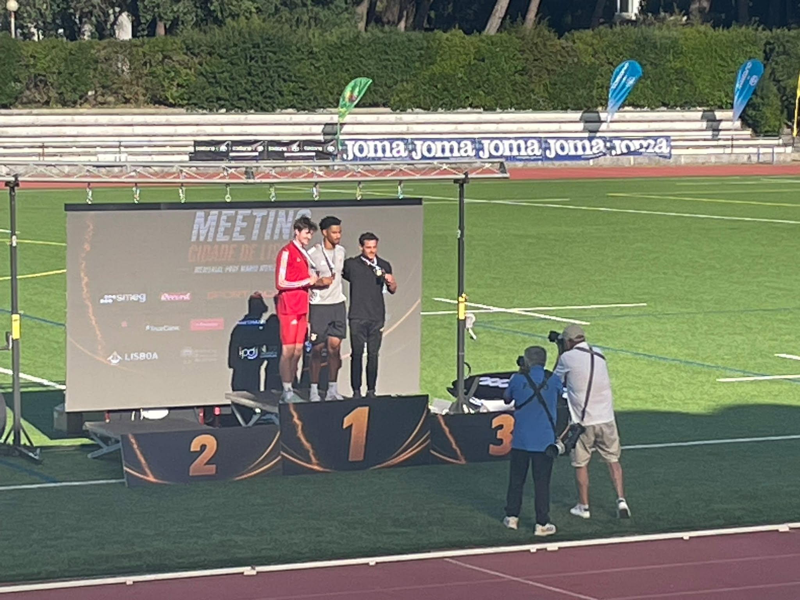
Pedro Fernandes Bate Recorde Pessoal
O atleta Pedro Fernandes estreou nova vara e conquistou o terceiro lugar no Meeting Cidade de Lisboa.
Ler notícia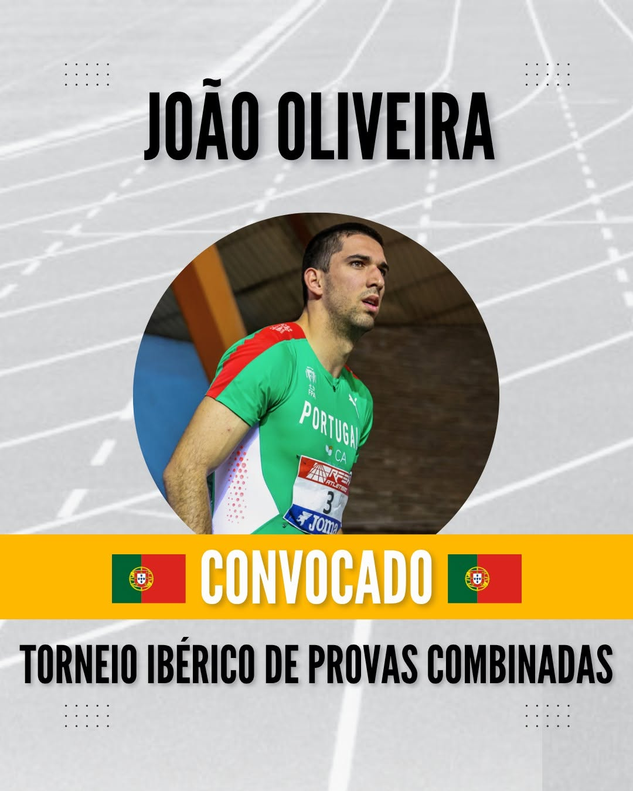
João Oliveira na Seleção Nacional
O nosso atleta João Oliveira foi convocado para representar a seleção nacional no próximo torneio ibérico de provas combinadas.
Ler notícia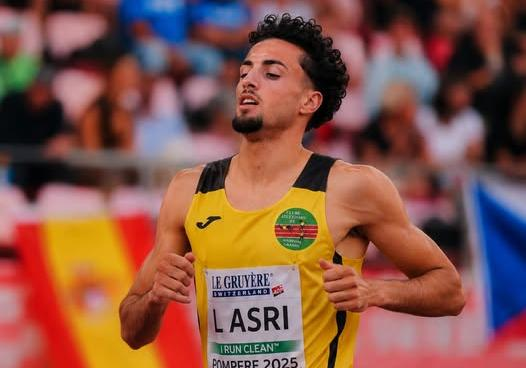
Bark no Campeonato do Mundo de Sub-20
O nosso atleta espanhol Bark El Asri, que enfrentou uma lesão na pista curta, regressou às competições neste fim de semana com uma performance impressionante.
Ler notícia
João e Tomás no Nacional de Sub-16
Os Campeonatos Nacionais de Sub-16 decorreram este fim de semana no Seixal, onde participaram dois atletas que se estrearam em competições nacionais.
Ler notícia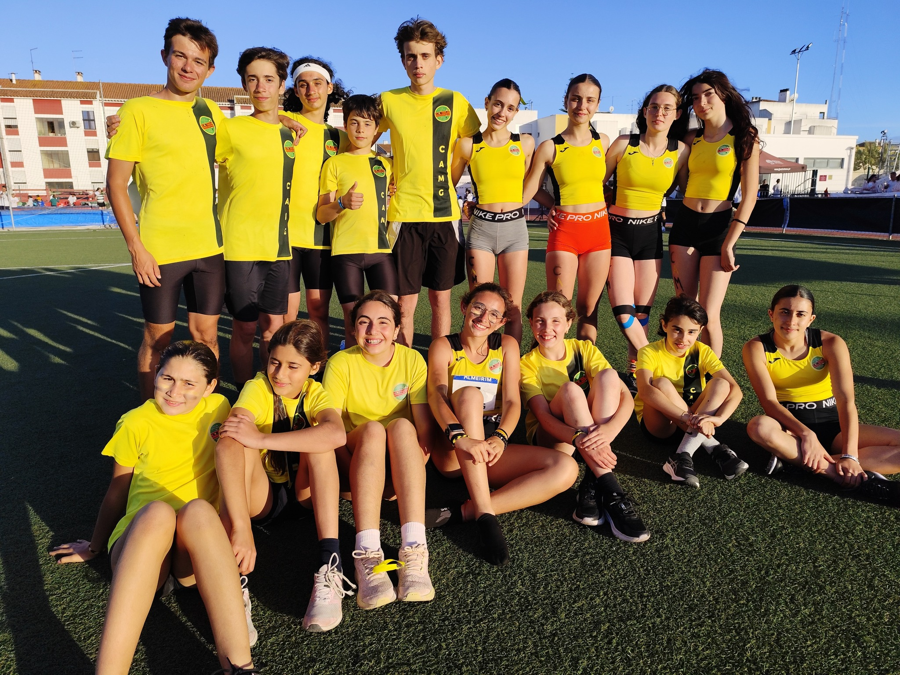
Taça Passovite - Almeirim
No feriado, 4 de junho, fomos até Almeirim participar na V Taça Passovite.
Ler notícia
Campeonatos Nacionais de Sub-16
O Complexo Municipal de Atletismo Carla Sacramento no Seixal recebe no próximo fim de semana, dias 6 e 7 de junho, os Campeonatos Nacionais de Sub-16.
Ler notícia
Camélia com Marca de Qualificação Nacional Sub-23
Camélia Terentiy foi 4ª e obteve marca de qualificação para o Campeonato Nacional de Sub-23 na prova de lançamento do disco ao lançar 35.19m.
Ler notícia
Bruna, Joana, João, e Helena no Olímpico Jovem Nacional
Albufeira recebeu este fim de semana, dias 30 e 31 de maio, o 43º Torneio Nacional Olímpico Jovem, uma das provas mais ambicionadas e especiais para os jovens atletas Sub-16 e Sub-18.
Ler notícia
Olímpico Jovem Nacional
No próximo fim de semana, dias 30 e 31 de maio, Albufeira recebe o Torneio Nacional Olímpico Jovem.
Ler notícia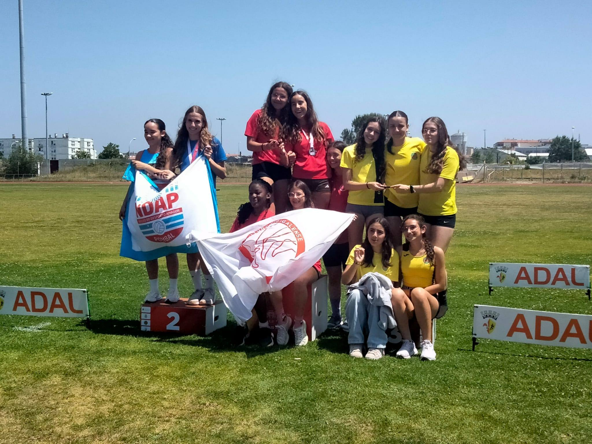
Equipas Sub-16 Conquistam 3º Lugar Distrital
O Estádio Municipal da Marinha Grande recebeu nos dias 23 e 24 de maio o Campeonato Distrital de Sub-16.
Ler notícia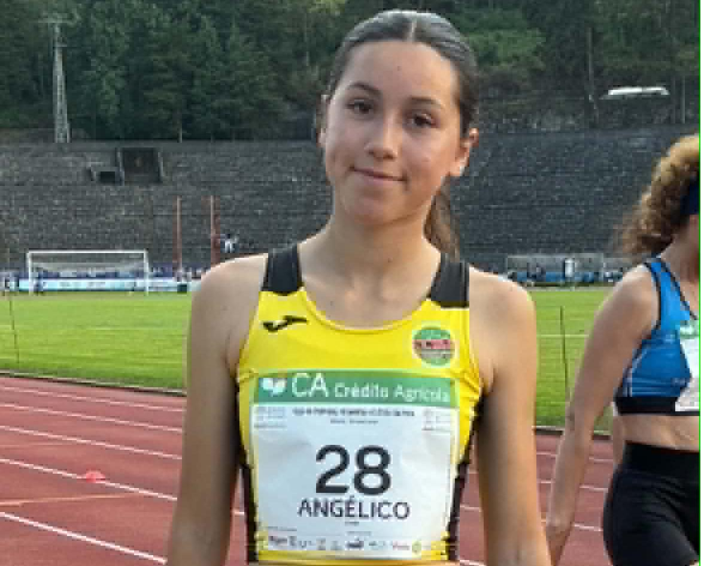
Matilde Angélico, 4ª Na Taça de Portugal de Marcha
Matilde Angélico foi a 4ª em absolutos e 2ª em sub-20 a completar a distância de 5.000m com o tempo de 24:33.86 minutos, estabelecendo um novo recorde pessoal.
Ler notícia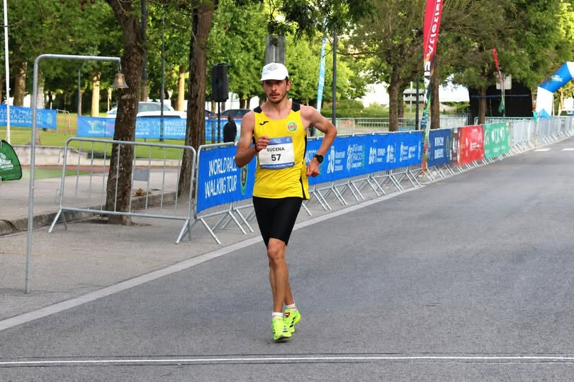
Tiago Sucena Bate Recorde Distrital
Tiago Sucena estabeleceu um novo recorde distrital de Absolutos e Sub-23.
Ler notícia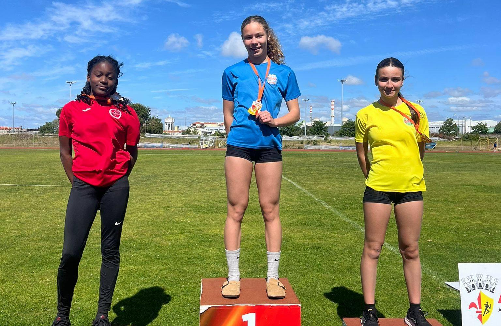
Uma Dúzia de Medalhas no Olímpico Jovem Distrital
O Estádio Municipal da Marinha Grande recebeu este fim de semana, dias 16 e 17 de maio, a fase distrital do Olímpico Jovem.
Ler notícia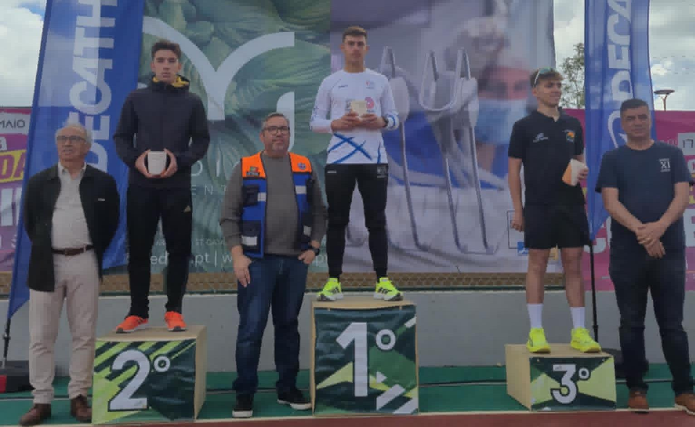
David e Emanuel no Pódio em Bajouca
Este domingo, decorreu o 34º Grande Prémio de Atletismo Bajouca.
Ler notícia
Matilde Angélico Vice-Campeã Nacional
Decorreu este sábado o 33.º Grande Prémio Internacional de Rio Maior que também acolheu os Campeonatos Nacionais de Marcha em Estrada para os escalões Sub-18 e Sub-20.
Ler notícia
Matilde Angélico Sétima no Nacional de 5000m
Lisboa recebeu no dia 1 de maio os Campeonatos Nacionais de 5000 metros destinados ao escalão de Sub-20.
Ler notícia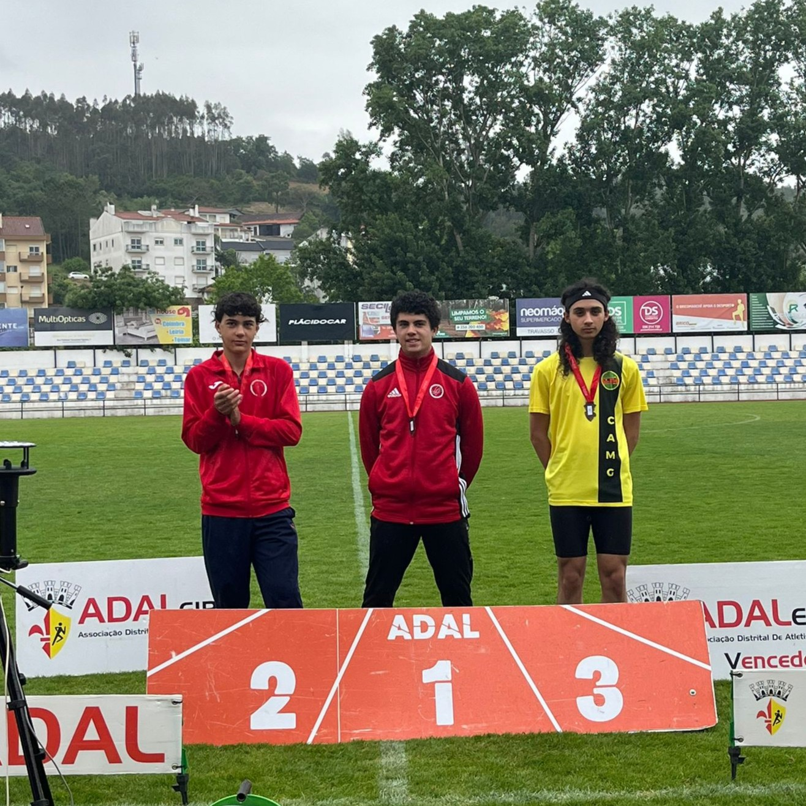
Três Medalhas nas Provas Extra
Marcamos presença em várias provas extra que decorreram este fim de semana no Estádio Municipal de Pombal.
Ler notícia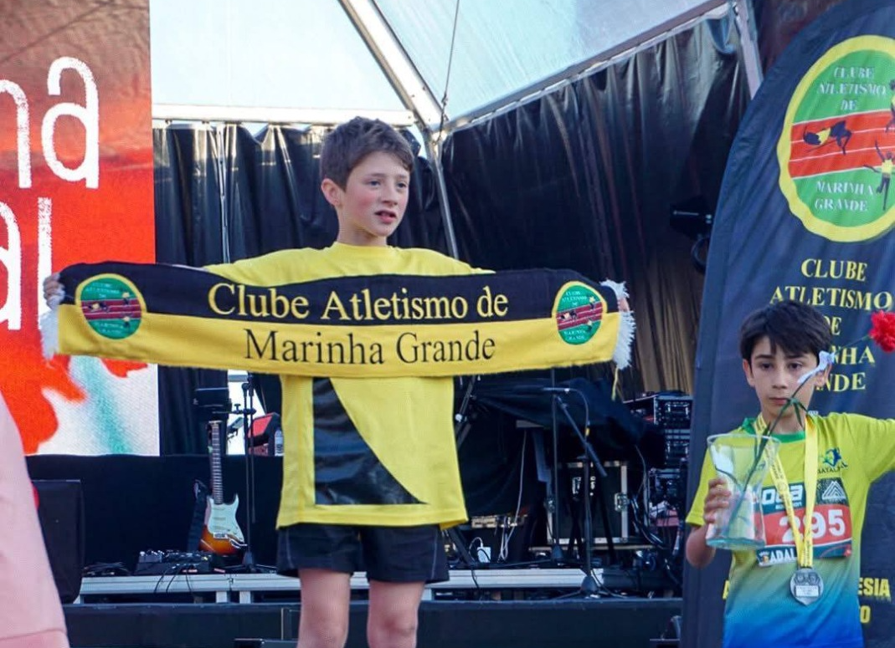
Grande Comitiva e Excelentes Resultados na Milha de Cristal 2026
A Marinha Grande recebeu mais de 400 atletas, ao final da tarde de 24 de abril, para a 36.ª edição da Milha Urbana mais antiga do País, a Milha de Cristal.
Ler notícia